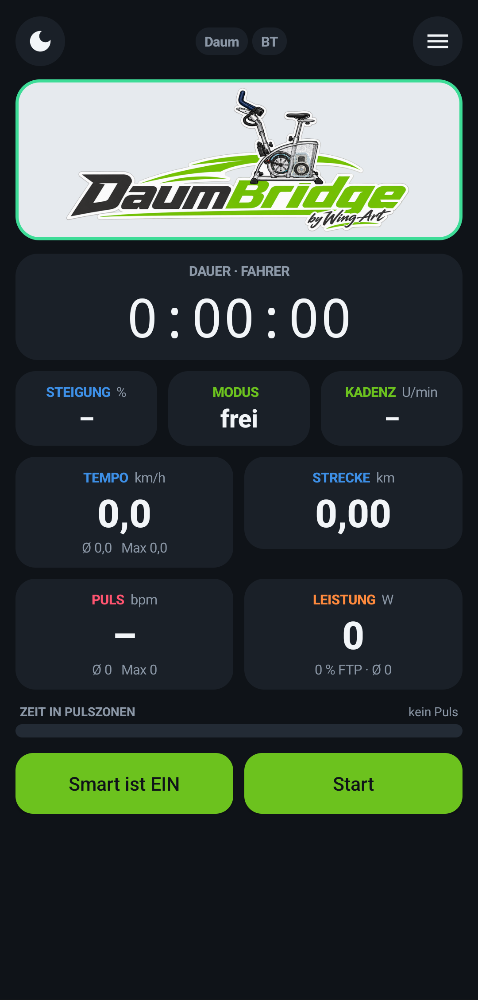
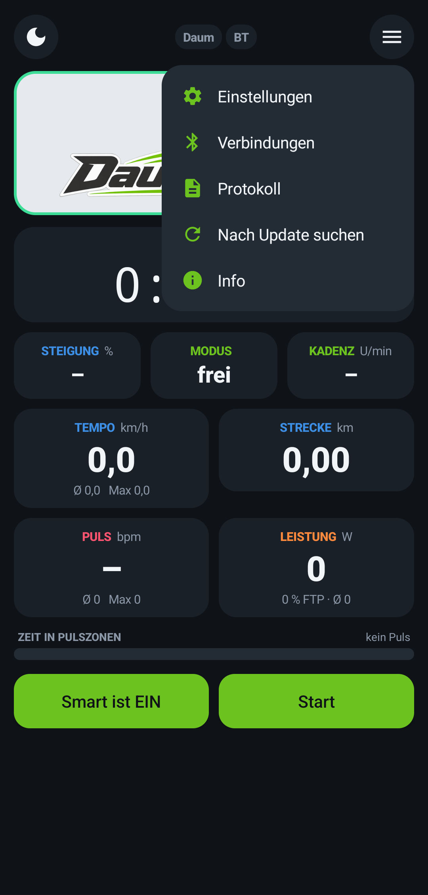
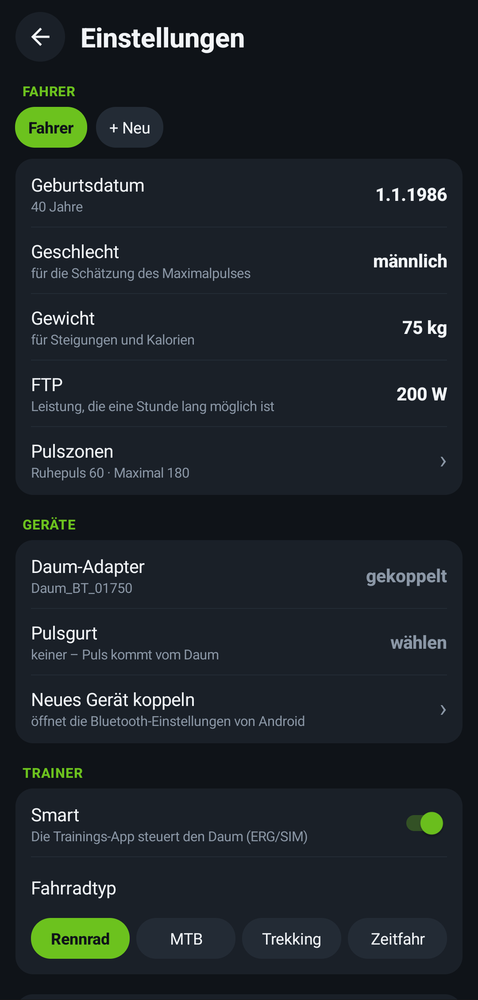
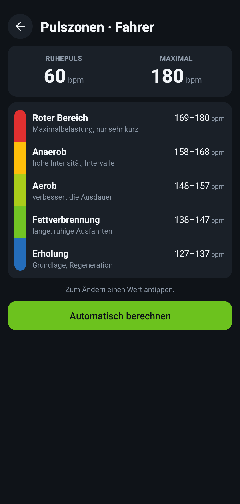
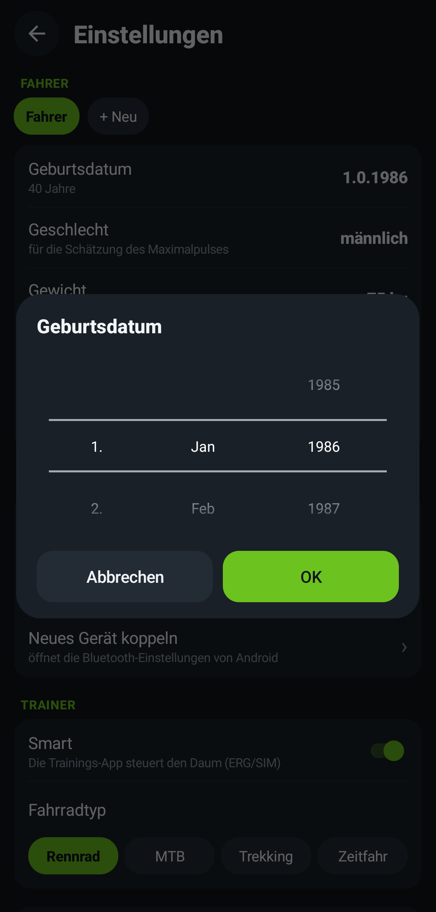
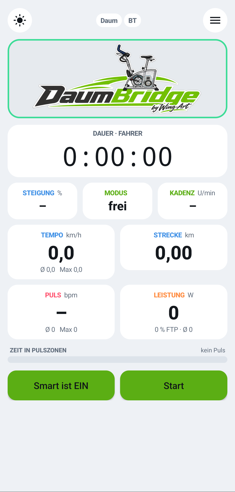

Version 0.9.1 – pre-release (beta) · Version history (German)
The app itself is in German – the English guide explains every menu.
What is DaumBridge?
Older Daum ergometers such as the Daum 8008 TRS 3 are unknown to Zwift and MyWhoosh. DaumBridge runs on an Android phone, connects to the ergometer through the blue Daum Bluetooth adapter (or a standard Bluetooth RS232 adapter) and shows up in your training app as a regular Bluetooth smart trainer (FTMS) – with ERG mode and slope simulation.






Why DaumBridge?
Other solutions for older Daum ergometers need a USB serial cable on the phone or a Raspberry Pi and some tinkering. DaumBridge doesn't – the phone talks wirelessly to the Bluetooth adapter on the Daum.
| DaumBridge | typical alternatives | |
|---|---|---|
| Connection to the Daum | wireless via Bluetooth adapter | USB-RS232 cable, often with OTG adapter |
| Extra hardware | none – just the adapter on the Daum | cable, sometimes a Raspberry Pi |
| Setup | install, pair, start | cable, drivers, sometimes Linux |
| Phone | place it anywhere | tied to the cable |
| Cost | free | varies |
Original Daum adapter sold out? A standard Bluetooth RS232 adapter works too.
Features
- Smart trainer via Bluetooth FTMS: ERG, slope simulation, resistance
- Sends power, cadence, speed and heart rate
- Bluetooth heart rate strap (e.g. Polar H9) – heart rate is passed on
- Rider profiles with heart rate zones, zone colours and a "time in zones" bar
- Live chart: tap the logo, it flips over and shows power, cadence and heart rate
- Summary after each ride
- Reconnects automatically if the adapter or strap drops out
- Light and dark mode, scroll wheel input, in-app updates
Up and running in 5 minutes
- Install: download the APK above, open it, install (allow installing from the browser).
- Pair the adapter: switch on the Daum, open the phone's Bluetooth settings, pair the Daum adapter. If Android asks for a PIN, it's the 4-digit number on the adapter – some pair without one.
- Select it in DaumBridge: menu ☰ → Einstellungen (Settings) → Geräte (Devices) → Daum-Adapter.
- Tap Start.
- In your training app, choose the trainer "DaumBridge".
iPhone is unfortunately not possible: the Daum adapter uses classic Bluetooth, which iPhones may not access. The training app itself can run on iPhone, iPad, Apple TV, Mac or PC.
Help
Private hobby project, pre-release – use at your own risk. Heart rate zones and calories are estimates, not medical advice. DaumBridge is not an official product and is not affiliated with Daum Electronic, Zwift, MyWhoosh or any other company mentioned.